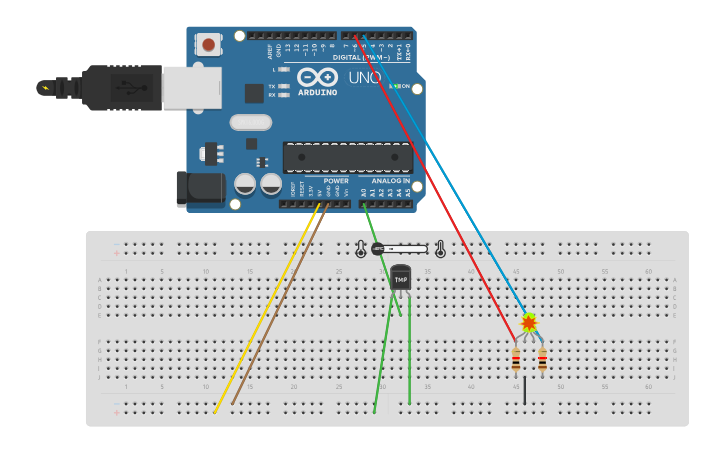

RBG Lamps with Arduino
Arduino is an open-source electronics platform based on easy-to-use hardware and software. It's intended for anyone making interactive projects. (arduino)
Examples of RBG Lamps with Arduino
| Project | Screenshot |
|---|---|
| Go to Basic RGB Lamp → | 
|
| Go to RBG Lamp with manual control → |  |
| Go to RGB Lamp with temp sensor → |  |